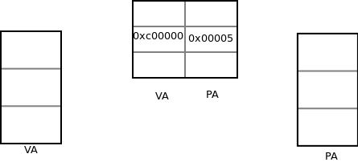

第一节 计算机体系结构概述
- 复习前面的知识点。
- 冯 诺伊曼与哈佛结构。
- CPU的功能单元及其工作原理：
寄存器register保存不同类型的数据，如ESP栈寻址。
程序计数器PC,保存下一条指令的地址.
指令译码器instruction decoder：读取的数据转换为指令的对应操作。
算数逻辑单元ALU：根据不同的指令做运算。
地址和数据总线bus：链接cpu与内存。 - 计算机的发展过程：
1.最初的计算机只有ALU和register,数据输入靠打孔的纸带，只能计算加法.
2.要想作其他的计算，必须把我们的要求告诉计算机，于是出现了Instruction Decoder.
3.如果想让计算机按照一定的流程工作，需要将编写一个指令集合，并且 有一个标志指名程序执行到什么地方了，于是出现了PC.
4.要想让计算机做复杂事情，很多数据需要记录下来，寄存器显得太小了。 于是引入内存，并且用总线将它CPU相连。
第二节 指令的执行过程
- 指令执行的过程，对编程没直接影响。但可以把握计算机体系架构
- 32位处理器，什么是32？
A. addr bus 32bit 。
B. data bus or register 32bit
C. 指令的长度 。
result： - 指令执行过程:
图 17_1 CPU的取指执行过程

第三节 设备
- 总线的是什么。
- arm与x86访问设备的指令不同，x86设备有对立的地址空间。
- x86硬盘设备数据的读写是挂在IDE,SATA,SCI总线上， 指令在存在硬盘上无法执行，程序加载到内存中，就成为进程。操作系统本身也是个程序。
- 访问内存与访问设备有所不同，比如读取串口上的数据。
- 驱动程序是操作设备的代码。
第四节 MMU（memory map unit）
- 物理地址PA与虚拟地址VA。
- 分页管理：物理地址与虚拟地址互相映射，不是每个以单个字节为单位的，
而是以多个字节为单位的。一般以4K为单位，4K就是一个页面。 - MMU图解：
图 17_1 mmu

- VA和PA如何映射的，他们通过页表建立对应关系，每个VA都对应一个PA，
通过一个也表表项建立对应关系。
几个虚拟页面对应几个页表表项。
每个表项含有两部分，一个为虚拟页地址，一个为物理页地址。 以4K为页面大小，4G为虚拟内存大小，页表表项的虚拟页地址大小因该是20bit。图 17_2 pagetable
